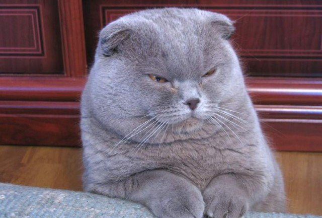
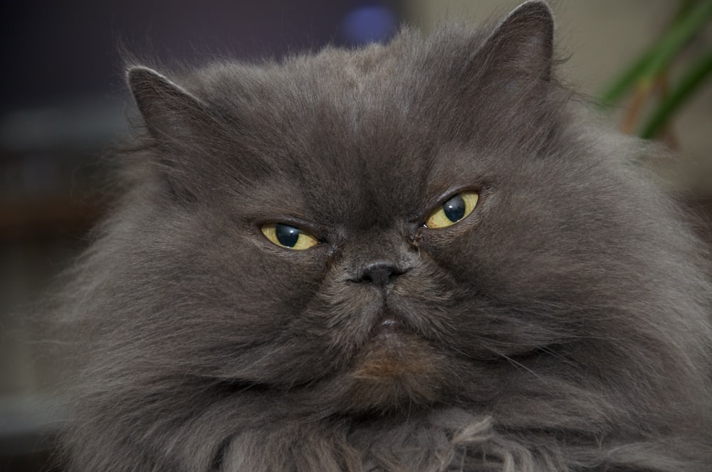
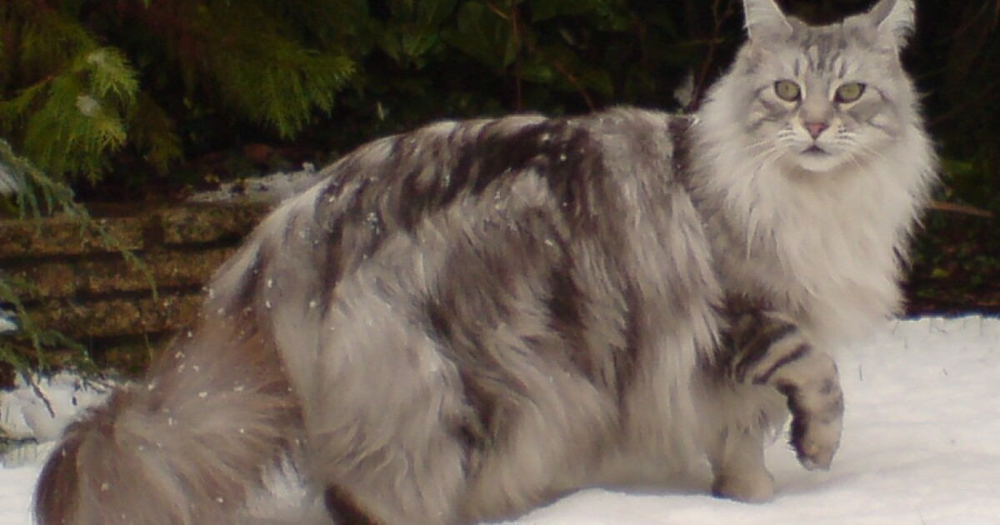
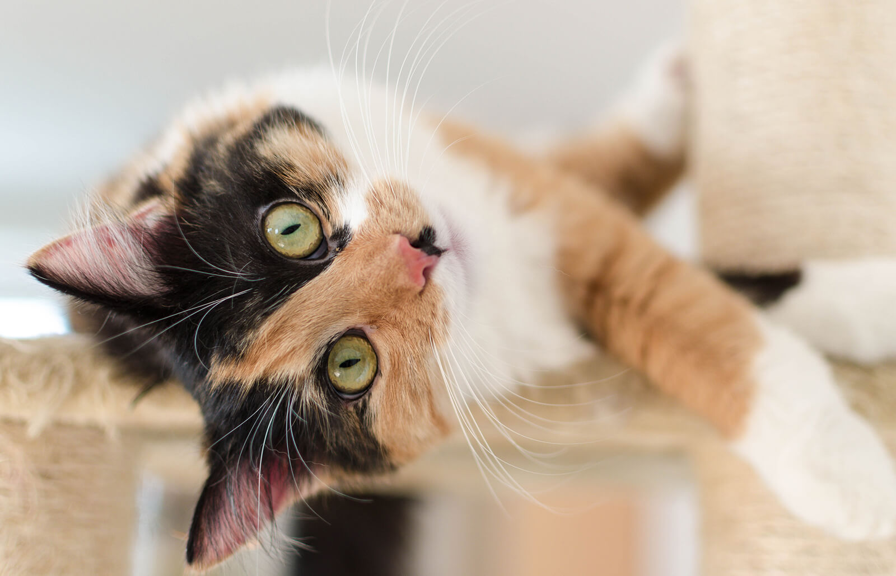
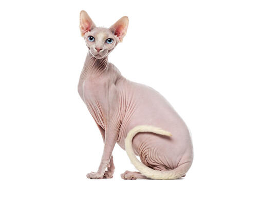

Cats |
Breed/Behavior |
Visual |
Origin/Rarity |
| Scottish Fold |
 |
Scotland |
| sociable and friendly and enjoy playing games, exploring, and having some quality lap time with their family. |
rare feline breed |
| Himalayan |
 |
Iran, Thailand, United States |
| gentle, quiet, sweet-tempered |
rare |
| Maine Coons |
 |
Maine, United States |
| gentle natured and friendly |
no longer considered rare |
| Calico |
 |
unknown |
| sweet, loving, and loyal cats |
very rare |
| Sphynx |
 |
Canada |
| enjoys entertaining and will often be the first to greet anyone who enters their home |
exceedingly rare |